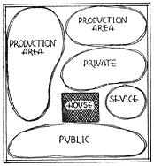
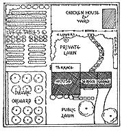

Developing a Plan
ALTHOUGH our homestead is not for sale, in January of this year I was offered more than twice the amount we originally paid for it.
Part of this increase is due to inflation and the housing shortage. But even a few years from now when the housing shortage is over and inflation has levelled off - and maybe real estate prices will take a big drop - even then I feel confident that our homestead will be worth considerably more than we originally paid and will be far more desirable and easier to sell than it was when we bought it.
One big reason for this extra value is the simple combination of a few little things that improve its appearance and its outdoor livability. I don't want to call it landscaping because you may think that means we have a large estate or have spent a lot of money on fancy things whereas what we've actually done is to plant a few inexpensive trees, shrubs and flowers in the most natural places. The amazing fact is with $25 worth of seeds and plants you can add literally hundreds of dollars to the value of a small place. More important, the place becomes lovelier and more livable. Your aim needn't be to make your yard showy - but just the kind of place people want to be in - a place that feels right outdoors.
If you'll look at the two top pictures of our place on page 10, you can see a couple of smaller changes that made a big difference. See how much better the small evergreens look compared with the tree at the corner. Also note the big improvement in the front entrance. Although it doesn't show too much in the snapshot, the picket fence (at left) gives the house a longer look.
Next time you are driving in the country look at the difference in various houses. Some seem bleak and undesirable. Others seem friendly and inviting. Often you see a new expensive place equipped with many modern improvemenst that you just wouldn't want to have for yourself. Then you'll notice a less expensive, less modern place, perhaps with a nice orchard and an informal hedge of berry bushes and several nice shade trees. This sort of place, though less modern, is the one that says "home".
Just what is it you do to a country place to make this difference? Here are a few suggestions - a five year plan, that can greatly increase the value of a small homestead:
1st Year Become familiar with basic landscaping methods so you can work out a good plan for the entire place. Make a pencil layout of your land showing the house, road, driveway, nearest neighbors, barn, vegetable garden, etc. On this drawing show where you want to plant shade trees, fruit trees (dwarf), hedges and vines. Then mark desirable spots for flower beds, climbing roses, etc. You may need a screen of privet hedge or hemlock for privacy or to conceal the laundry yard or compost heap or close neighbors. If you want tall trees in a hurry, consider the fast-growing poplars - also privet hedge will grow high in one season. You can plant beds of perennials the first year too, but plant only as many as you can manage. Plant the trees, vines and shrubs first because they will take several years to grow and develop. If you don't like cutting the grass, you needn't have a large lawn. You can make it small by setting a hedge of brambles or berries, for instance, at the desired limits and beyond plant a beautiful field of alfalfa or clover.
2nd Year Finish planting the flowers and any shrubs still desired. Be sure to have some good perennials (peonies, chrysanthemums, iris, hollyhocks). Study up on outdoor furnishings - maybe a terrace near the house or a trellis for climbing roses or grapes. Decide where you'd like to have a garden seat beneath a good shade tree or possibly an arbor with a love seat, swing or hammock.
3rd Year Develop your present plantings a little more as needed. By now you may be ready to add the trellis you've been planning and some simple garden furniture. A brick walk set in sand can be very attractive and is easy to do. Consider adding a combination fish pond and garden pool using it partly as a fence with a border of blueberries. Any steep slopes or terraces will make a good place for a rock garden.
4th Year By now you have finished all the foundation plantings. You are getting fruit from your dwarf fruit trees and berries from your "hedges" of raspberries, blackberries etc. A few finishing touches will probably be needed in the flower bed. Try to have enough flowers so they will bloom continuously from Spring to late Fall. Plant borders along the front walk from the house to the road.
5th Year The plan should now be about complete, but you will see obvious improvements. For instance, you may want a little more variety now in your flowers and fruits. See if you can't find a few interesting and different varieties in your reference library. Consider ways to blend your animals into the general scheme - especially ducks and geese in the pond, goats in the more wooded section, sheep on the more distant slopes. By now your experience, plus a little study, will tell you what is needed.
Be sure to take a picture of your homestead before you start this plan and another after it is completed. I'll bet there will be such a difference in the two photographs that you will hardly recognize the old place.
1.) Always have your holes dug before you get the plants for transplanting. 2.) Transplant immediately - don't give the plants time to dry out or they will die. Now finally, to save you needless expense on plants and seedlings and flowers, here are a few practical tips:
3.) Plan to get "bare root" plants in early Spring or late Fall. At this time it is not usually necessary for plants to be balled and burlapped (as it is in the Summer) so you will save money.
5.) Most big nurseries have a surplus list of trees and bushes which have grown so large that they must be transplanted. These are often reduced in price "for clearance". They will be perfectly healthy plants if you are dealing with a reliable nursery. 6.) If you learn enough about trees and plants and flowers you can master the trick of getting them from the woods and having a "wild garden" on your own grounds. Many varieties cannot be obtained in any other way. 4.) Don't buy more plants than you can plant in a day.
Below, you'll find two aids to landscaping which can be a lot of help. First of all at the top are the two little diagrams showing the "wrong way" and the "right way" to arrange plantings and driveway of a small area. It shows pretty clearly what a mistake it is to just plant anywhere, how you can spoil the looks of your place by bad planning even though you may spend a lot of money for pretty flowers and beautiful trees. Of course you can avoid this by having a landscape architect, but we don't think that is necessary for a small place.
If you will do a little reading on the subject you'll find landscaping is simple and it's easy to learn the don'ts.
Below the "right-wrong" diagram is a landscaping score card which we've adapted from a farmstead score card put out by the Agricultural Extension Service at Ohio State University. You may not agree with all of the things listed here - some points are largely a matter of personal taste and a great deal depends on your locality. But we think you'll find this score card very useful just the same, for checking over your own place and finding ways to improve it.
|
 FIRST - Divide your place into four separate areas: public, private, service and production |
SECOND - In each area lay out the buildings, gardens, lawns as desired. |
 THIRD - Decide how each area should be planted to make boundaries for privacy, beauty and productivity. |
|
|
|
|